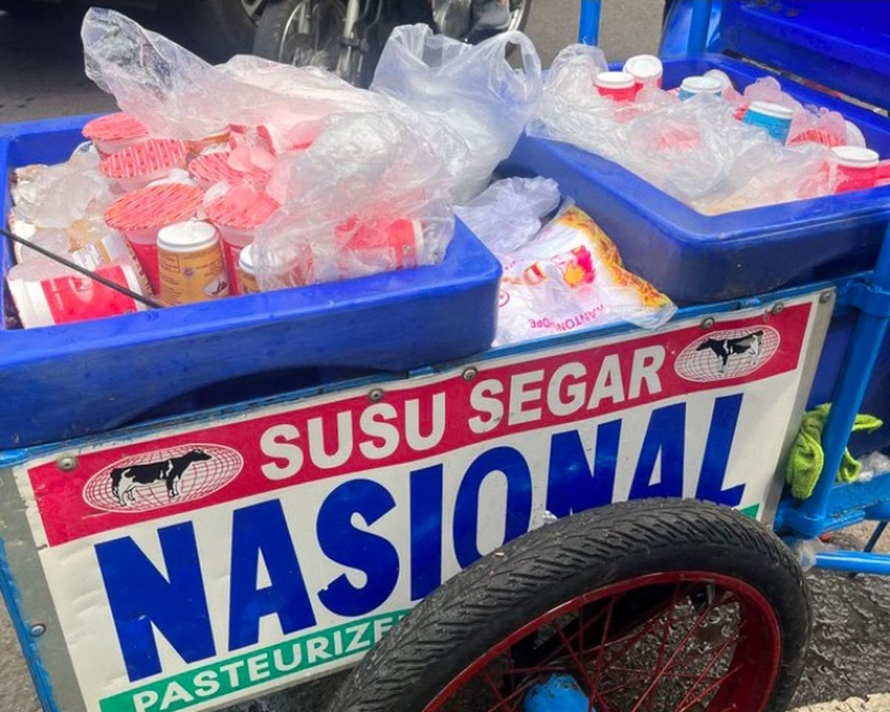

VARIAN
Kenali Varian Susu Murni Nasional
Dari cup praktis hingga pack keluarga, kenali pilihan varian dan rasa yang tersedia.
Baca Selengkapnya →Tutup ↑
Susu Murni Nasional hadir dalam beberapa ukuran. Susu Cup 130 ml yang praktis dibawa, Susu Pack Tawar 150 ml untuk kebutuhan nutrisi harian, dan Susu Medium Pack 150 ml dengan pilihan rasa.
Pilih rasa tawar bila ingin susu murni tanpa tambahan rasa, atau varian berasa seperti stroberi dan melon untuk teman santai. Semua varian ada di halaman Produk. .